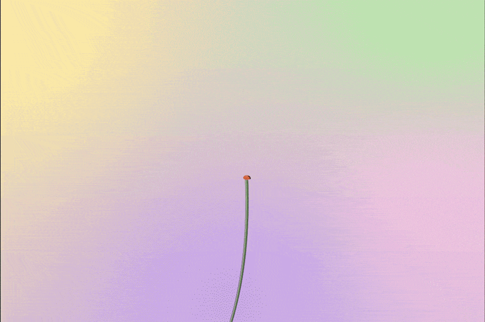

April is a LA-based visual & interactive experience designer who believes technology should be more than tools and interactivity should always revolve around empathy.
-

3D Animation
SHANHAI is a series of still and animation frames based on an imaginary terrain inspired by the mythic geography and beasts from the Chinese book "Classic of Mountains and Seas". The name SHANHAI in Chinese means "Mountain Sea"(山海). Built to be a meditative experience, the piece puts the audience in an eerie world with a lot of organic creatures.
-
Print Design / Research
This 12-page RISO print publication discusses the consequences of anthropocene waste, particularly bioaccumulation, from a pile of plastic bags I collected from my everyday life. I created a ‘fish’ sculpture from these plastic bags, photoraphed and used it as a metaphor of human’s impact on marine organisms.
-
Illustration / Graphic Design
A selection of the illustrations I did over the past 3 years.
-

Game Development / Unity3D
POINTLESS MINDSCAPE is a 2D platform-adventure game where the player plays as the main character, Orby. Orby is stuck in the space between people’s past life and next life, a limbo where they are unable to escape unless they complete the “bridge” that leads to the gate of the next life.
-

After Effects / Cinema 4D
A selection of motion graphics I created over the past 3 years.
-

Typography / Book Design / Research
A typography book that consists of 40 cover designs based on Chinese singer Teresa Teng (鄧麗君)'s song “May We be Blessed with Longevity” (但願人長久). Each design uses the year, the name of the song, artist and album as the only text source. After all designs have been completed, they are put together using a Chinese-style stitch binding method.